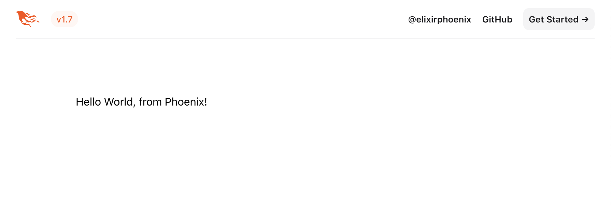
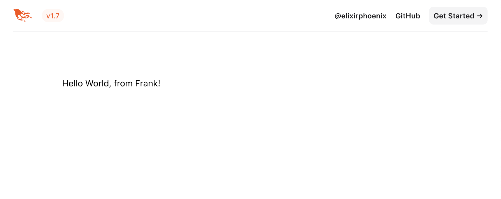

Ciclo de vida da requisição
Requisito: Este guia pressupõe que você tenha passado pelos guias introdutórios e tenha uma aplicação Phoenix em execução.
O objetivo deste guia é falar sobre o ciclo de vida da requisição do Phoenix. Este guia adotará uma abordagem prática onde aprenderemos fazendo: adicionaremos duas novas páginas ao nosso projeto Phoenix e comentaremos como as peças se encaixam ao longo do caminho.
Vamos começar com nossa primeira nova página Phoenix!
Adicionando uma nova página
Quando seu navegador acessa http://localhost:4000/, ele envia uma requisição HTTP para qualquer serviço que esteja rodando nesse endereço, neste caso, nossa aplicação Phoenix. A requisição HTTP é composta por um verbo e um caminho. Por exemplo, as seguintes requisições do navegador se traduzem em:
| Barra de endereço do navegador | Verbo | Caminho |
|---|---|---|
| http://localhost:4000/ | GET | / |
| http://localhost:4000/hello | GET | /hello |
| http://localhost:4000/hello/world | GET | /hello/world |
Existem outros verbos HTTP. Por exemplo, enviar um formulário geralmente usa o verbo POST.
Aplicações web normalmente tratam requisições mapeando cada par verbo/caminho para uma parte específica da sua aplicação. Esse mapeamento no Phoenix é feito pelo roteador. Por exemplo, podemos mapear "/articles" para uma parte da nossa aplicação que mostra todos os artigos. Portanto, para adicionar uma nova página, nossa primeira tarefa é adicionar uma nova rota.
Uma nova rota
O roteador mapeia pares únicos de verbo/caminho HTTP para pares de controlador/ação que irão tratá-los. Controladores no Phoenix são simplesmente módulos Elixir. Ações são funções que são definidas dentro desses controladores.
O Phoenix gera um arquivo de roteador para nós em novas aplicações em lib/hello_web/router.ex. É aqui que estaremos trabalhando nesta seção.
A rota para nossa página "Bem-vindo ao Phoenix!" do Guia de Execução anterior se parece com isso:
get "/", PageController, :homeVamos entender o que esta rota nos diz. Visitar http://localhost:4000/ emite uma requisição HTTP GET para o caminho raiz. Todas as requisições como esta serão tratadas pela função home/2 no módulo HelloWeb.PageController definido em lib/hello_web/controllers/page_controller.ex.
A página que vamos construir dirá "Hello World, from Phoenix!" quando apontarmos nosso navegador para http://localhost:4000/hello.
A primeira coisa que precisamos fazer é criar a rota da página para uma nova página. Vamos abrir lib/hello_web/router.ex em um editor de texto. Para uma aplicação nova, ele se parece com isto:
defmodule HelloWeb.Router do
use HelloWeb, :router
pipeline :browser do
plug :accepts, ["html"]
plug :fetch_session
plug :fetch_live_flash
plug :put_root_layout, html: {HelloWeb.Layouts, :root}
plug :protect_from_forgery
plug :put_secure_browser_headers
end
pipeline :api do
plug :accepts, ["json"]
end
scope "/", HelloWeb do
pipe_through :browser
get "/", PageController, :home
end
# Other scopes may use custom stacks.
# scope "/api", HelloWeb do
# pipe_through :api
# end
# ...
endPor enquanto, vamos ignorar os pipelines e o uso de scope aqui e apenas focar em adicionar uma rota. Discutiremos isso no guia de Roteamento.
Vamos adicionar uma nova rota ao roteador que mapeia uma requisição GET para /hello para a ação index de um HelloWeb.HelloController que criaremos em breve dentro do bloco scope "/" do do roteador:
scope "/", HelloWeb do
pipe_through :browser
get "/", PageController, :home
get "/hello", HelloController, :index
endUm novo controlador
Controladores são módulos Elixir, e ações são funções Elixir definidas neles. O propósito das ações é reunir os dados e realizar as tarefas necessárias para a renderização. Nossa rota especifica que precisamos de um módulo HelloWeb.HelloController com uma função index/2.
Para fazer a ação index acontecer, vamos criar um novo arquivo lib/hello_web/controllers/hello_controller.ex, e fazê-lo parecer com o seguinte:
defmodule HelloWeb.HelloController do
use HelloWeb, :controller
def index(conn, _params) do
render(conn, :index)
end
endDeixaremos uma discussão de use HelloWeb, :controller para o guia de Controladores. Por enquanto, vamos focar na ação index.
Todas as ações do controlador recebem dois argumentos. O primeiro é conn, uma struct que contém uma tonelada de dados sobre a requisição. O segundo é params, que são os parâmetros da requisição. Aqui, não estamos usando params, e evitamos avisos do compilador prefixando-o com _.
O núcleo desta ação é render(conn, :index). Ele diz ao Phoenix para renderizar o template index. Os módulos responsáveis pela renderização são chamados de views. Por padrão, as views do Phoenix são nomeadas após o controlador (HelloController) e formato (HTML neste caso), então o Phoenix espera que exista um HelloWeb.HelloHTML e defina uma função index/1.
Uma nova view
As views do Phoenix atuam como a camada de apresentação. Por exemplo, esperamos que a saída da renderização index seja uma página HTML completa. Para facilitar nossas vidas, frequentemente usamos templates para criar essas páginas HTML.
Vamos criar uma nova view. Crie lib/hello_web/controllers/hello_html.ex e faça-o parecer com isso:
defmodule HelloWeb.HelloHTML do
use HelloWeb, :html
endPara adicionar templates a esta view, podemos defini-los como componentes de função no módulo ou em arquivos separados.
Vamos começar definindo um componente de função:
defmodule HelloWeb.HelloHTML do
use HelloWeb, :html
def index(assigns) do
~H"""
Hello!
"""
end
endDefinimos uma função que recebe assigns como argumentos e usamos o sigil ~H para colocar o conteúdo que queremos renderizar. Dentro do sigil ~H, usamos uma linguagem de template chamada HEEx, que significa "HTML+EEx". EEx é uma biblioteca para incorporar Elixir que vem como parte do próprio Elixir. "HTML+EEx" é uma extensão Phoenix do EEx que é consciente do HTML, com suporte para validação HTML, componentes e escape automático de valores. Este último protege você contra vulnerabilidades de segurança como Cross-Site-Scripting sem trabalho extra da sua parte.
Um arquivo de template funciona da mesma maneira. Componentes de função são ótimos para templates menores e arquivos separados são uma boa escolha quando você tem muita marcação ou suas funções começam a ficar incontroláveis.
Vamos experimentar definindo um template em seu próprio arquivo. Primeiro, exclua nossa função def index(assigns) de cima e substitua-a por uma declaração embed_templates:
defmodule HelloWeb.HelloHTML do
use HelloWeb, :html
embed_templates "hello_html/*"
endAqui estamos dizendo a Phoenix.Component para incorporar todos os templates .heex encontrados no diretório irmão hello_html em nosso módulo como definições de funções.
Em seguida, precisamos adicionar arquivos ao diretório lib/hello_web/controllers/hello_html.
Observe que o nome do controlador (HelloController), o nome da view (HelloHTML) e o diretório do template (hello_html) seguem a mesma convenção de nomenclatura e são nomeados um após o outro. Eles também estão colocados juntos na árvore de diretórios:
Nota: Podemos renomear o diretório
hello_htmlpara o que quisermos e colocá-lo em um subdiretório delib/hello_web/controllers, desde que atualizemos a configuraçãoembed_templatesadequadamente. No entanto, é melhor manter a mesma convenção de nomenclatura para evitar qualquer confusão.
lib/hello_web
├── controllers
│ ├── hello_controller.ex
│ ├── hello_html.ex
│ ├── hello_html
| ├── index.html.heexUm arquivo de template tem a seguinte estrutura: NOME.FORMATO.LINGUAGEM_DE_TEMPLATE. No nosso caso, vamos criar um arquivo index.html.heex em lib/hello_web/controllers/hello_html/index.html.heex:
<section>
<h2>Hello World, from Phoenix!</h2>
</section>Os arquivos de template são compilados no módulo como componentes de função, não há diferença de runtime ou desempenho entre os dois estilos.
Agora que temos a rota, o controlador, a view e o template, devemos ser capazes de apontar nossos navegadores para http://localhost:4000/hello e ver nossa saudação do Phoenix! (Caso você tenha parado o servidor ao longo do caminho, a tarefa para reiniciá-lo é mix phx.server.)

Há algumas coisas interessantes para notar sobre o que acabamos de fazer. Não precisamos parar e reiniciar o servidor enquanto fazíamos essas mudanças. Sim, o Phoenix tem recarregamento automático de código! Além disso, mesmo que nosso arquivo index.html.heex consista apenas de uma única tag section, a página que obtemos é um documento HTML completo. Nosso template de índice é realmente renderizado em layouts: primeiro ele renderiza lib/hello_web/components/layouts/root.html.heex que renderiza lib/hello_web/components/layouts/app.html.heex que finalmente inclui nosso conteúdo. Se você abrir esses arquivos, verá uma linha que se parece com isso na parte inferior:
{@inner_content}Que injeta nosso template no layout antes que o HTML seja enviado para o navegador. Falaremos mais sobre layouts no guia de Controladores.
Uma nota sobre recarregamento automático de código: Alguns editores com seus linters automáticos podem impedir que o recarregamento automático de código funcione. Se não estiver funcionando para você, por favor veja a discussão neste issue.
Do endpoint às views
Conforme construímos nossa primeira página, pudemos começar a entender como o ciclo de vida da requisição é montado. Agora vamos dar uma olhada mais holística nisso.
Todas as requisições HTTP começam em nosso endpoint da aplicação. Você pode encontrá-lo como um módulo chamado HelloWeb.Endpoint em lib/hello_web/endpoint.ex. Quando você abrir o arquivo do endpoint, verá que, semelhante ao roteador, o endpoint tem muitas chamadas para plug. Plug é uma biblioteca e uma especificação para unir aplicações web. É uma parte essencial de como o Phoenix lida com requisições e discutiremos isso em detalhes no guia do Plug a seguir.
Por enquanto, é suficiente dizer que cada plug define uma fatia do processamento da requisição. No endpoint você encontrará um esqueleto aproximadamente assim:
defmodule HelloWeb.Endpoint do
use Phoenix.Endpoint, otp_app: :hello
plug Plug.Static, ...
plug Plug.RequestId
plug Plug.Telemetry, ...
plug Plug.Parsers, ...
plug Plug.MethodOverride
plug Plug.Head
plug Plug.Session, ...
plug HelloWeb.Router
endCada um desses plugs tem uma responsabilidade específica que aprenderemos mais tarde. O último plug é precisamente o módulo HelloWeb.Router. Isso permite que o endpoint delegue todo o processamento adicional da requisição ao roteador. Como agora sabemos, sua principal responsabilidade é mapear pares verbo/caminho para controladores. O controlador então diz a uma view para renderizar um template.
Neste momento, você pode estar pensando que podem ser muitas etapas apenas para renderizar uma página. No entanto, à medida que nossa aplicação cresce em complexidade, veremos que cada camada serve a um propósito distinto:
endpoint (
Phoenix.Endpoint) - o endpoint contém o caminho comum e inicial pelo qual todas as requisições passam. Se você quiser que algo aconteça em todas as requisições, isso vai para o endpoint.roteador (
Phoenix.Router) - o roteador é responsável por despachar verbo/caminho para controladores. O roteador também nos permite escopar funcionalidades. Por exemplo, algumas páginas em sua aplicação podem exigir autenticação do usuário, outras podem não exigir.controlador (
Phoenix.Controller) - o trabalho do controlador é recuperar informações da requisição, falar com seu domínio de negócios e preparar dados para a camada de apresentação.view - a view lida com os dados estruturados do controlador e os converte em uma apresentação para ser mostrada aos usuários. As views são frequentemente nomeadas após o formato de conteúdo que estão renderizando.
Vamos fazer uma rápida recapitulação de como os últimos três componentes funcionam juntos, adicionando outra página.
Outra nova página
Vamos adicionar um pouco de complexidade à nossa aplicação. Vamos adicionar uma nova página que reconhecerá uma parte da URL, rotulá-la como um "mensageiro" e passá-la pelo controlador para o template para que nosso mensageiro possa dizer olá.
Como fizemos na última vez, a primeira coisa que faremos é criar uma nova rota.
Outra nova rota
Para este exercício, vamos reutilizar o HelloController criado na etapa anterior e adicionar uma nova ação show. Vamos adicionar uma linha logo abaixo da nossa última rota, assim:
scope "/", HelloWeb do
pipe_through :browser
get "/", PageController, :home
get "/hello", HelloController, :index
get "/hello/:messenger", HelloController, :show
endObserve que usamos a sintaxe :messenger no caminho. O Phoenix pegará qualquer valor que apareça nessa posição na URL e o converterá em um parâmetro. Por exemplo, se apontarmos o navegador para: http://localhost:4000/hello/Frank, o valor de "messenger" será "Frank".
Outra nova ação
Requisições para nossa nova rota serão tratadas pela ação show do HelloWeb.HelloController. Já temos o controlador em lib/hello_web/controllers/hello_controller.ex, então tudo o que precisamos fazer é editar esse controlador e adicionar uma ação show a ele. Desta vez, precisaremos extrair o mensageiro dos parâmetros para que possamos passá-lo (o mensageiro) para o template. Para fazer isso, adicionamos esta função show ao controlador:
def show(conn, %{"messenger" => messenger}) do
render(conn, :show, messenger: messenger)
endDentro do corpo da ação show, também passamos um terceiro argumento para a função render, um par chave-valor onde :messenger é a chave, e a variável messenger é passada como o valor.
Se o corpo da ação precisar acessar o mapa completo de parâmetros vinculados à variável params, além da variável mensageiro vinculada, poderíamos definir show/2 assim:
def show(conn, %{"messenger" => messenger} = params) do
...
endÉ bom lembrar que as chaves do mapa params sempre serão strings, e que o sinal de igual não representa atribuição, mas é uma asserção de correspondência de padrão.
Outro novo template
Para a última peça deste quebra-cabeça, precisaremos de um novo template. Como é para a ação show de HelloController, ele irá para o diretório lib/hello_web/controllers/hello_html e será chamado show.html.heex. Ele se parecerá surpreendentemente com nosso template index.html.heex, exceto que precisaremos exibir o nome do nosso mensageiro.
Para fazer isso, usaremos as tags especiais HEEx para executar expressões Elixir: {...} e <%= %>. Observe que a tag EEx tem um sinal de igual assim: <%= . Isso significa que qualquer código Elixir que estiver entre essas tags será executado, e o valor resultante substituirá a tag na saída HTML. Se o sinal de igual estivesse ausente, o código ainda seria executado, mas o valor não apareceria na página.
Lembre-se de que nossos templates são escritos em HEEx (HTML+EEx). HEEx é um superconjunto de EEx e, portanto, suporta a sintaxe de interpolação <%= %> do EEx para interpolação de blocos arbitrários de código. Em geral, a sintaxe de interpolação {...} do HEEx é preferida sempre que houver interpolação consciente do HTML a ser feita – como dentro de atributos ou valores inline com um corpo.
As únicas vezes em que a interpolação <%= %> do EEx é necessária é para interpolação de blocos arbitrários de marcação, como lógica de ramificação que injeta árvores de marcação separadas, ou para interpolação de valores dentro de tags <script> ou <style>.
É assim que o template hello_html/show.html.heex deve parecer:
<section>
<h2>Hello World, from {@messenger}!</h2>
</section>Nosso mensageiro aparece como @messenger.
Os valores que passamos para a view a partir do controlador são coletivamente chamados de nossos "assigns". Poderíamos acessar nosso valor de mensageiro via assigns.messenger, mas através de alguma metaprogramação, o Phoenix nos dá a sintaxe muito mais limpa @ para uso em templates.
Terminamos. Se você apontar seu navegador para http://localhost:4000/hello/Frank, deverá ver uma página que se parece com esta:

Brinque um pouco. O que quer que você coloque após /hello/ aparecerá na página como seu mensageiro.